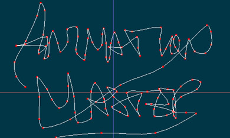
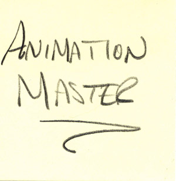
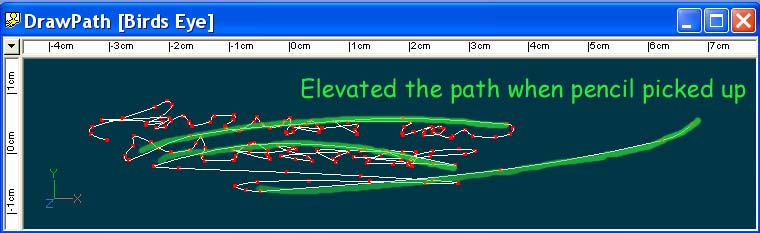
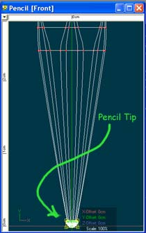
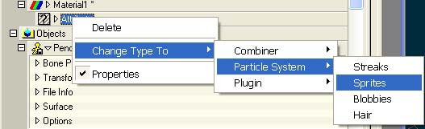
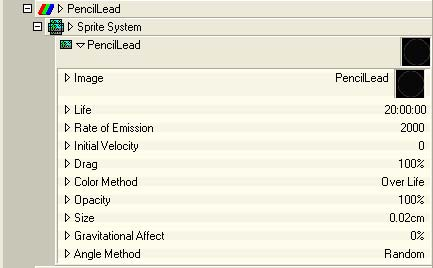
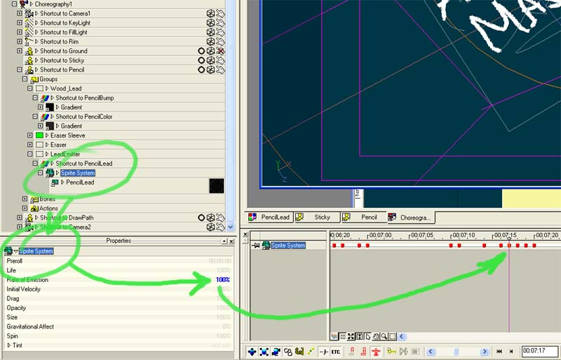
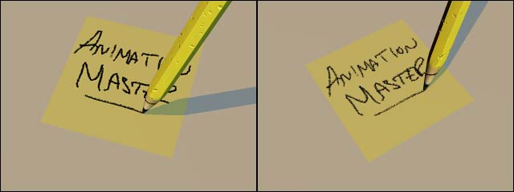

|  | ||||||||||||||||
Tutorial: Animated Writing with SpritesMarch 5, 2002 |
||||||||||||||||
A question that has come up on the list a few times over the years is: "How do I animate a character writing something, either on paper or on a, say, a chalkboard? There are ways to do it, but the answers seemed like they took a lot of work to fake the effect. You could do anything including animated decals where you erase the writing over a series of frames then reverse the frames to animated transparency maps. These then meant you had to animate the pencil or chalk being at the right point for where the writing is. Ugh. Lots of work. So take a look at the problem solved differently, then come back and see yet another way to solve the problem. The animation is here (QuickTime, On2 Codec, 537k, 10s) One of the keen new features in v9.5 gives us another option: Sprites or Sprticles. There's some great examples of very nice explosions and fires and clouds of smoke. Here's an example of using the effect for a bit of a different purpose. Let's use sprites to do the writing and let the system do all (or at least most) of the hard work for us! Step 1: The pathVery simply, we need a path to write on to start with. In my case I wrote what I wanted to see on a sticky, scanned it in, created a new model, created a rotoscope of my sticky I scanned and simply created a path along my writing, applying CPs where I needed them. Below are images of my scan and the resultant path, after removing the roto. The final image of the three is the bird's eye view of the path. I elevated several of the CPs to simulate picking up the pencil as you go from one word to another. The StickyThe PathThe Path in Bird's Eye ViewStep 2: The Pencil ModelNow that I have a path to write along, I need something to write with and it needs to be able to write. My thanks for Jeremy Fernsler for his model of a pencil modeled completely with materials. I had to mess with it a bit to get the wood looking alright since it used a ToonNation plugin not currently available on v9.5. In the closeup of the tip of the pencil below, I applied the material we'll create next to the tip of the pencil. Sprite materials didn't want to emit from a ring of CPs (the *very* tip of the pencil) so I created a group of the very tip and next ring up so there would be actual patches for the sprites to emit from. The Pencil ModelStep 3: The MaterialTo create a Sprite based material, create a new material and change the main attribute to Sprite Emitter like so: Now we're going to change the attributes of the material. This part is highly experimental as documentation is still under construction, but most of the changes we'll make are pretty logical. Here's what we'll end up with: Some details:
These are the highlights, but each has features and controls under the main ones that can help tweak the effect.. Finally (or to begin with) we need to set the image we'll emit. In my case I made a simple 32x32 bit image with an alpha channel that started out as the inverted version of the bitmap and then I fiddled with the levels a bit to add some variation. The image is on the left, the alpha channel on the right: Step 4: The ChoreographyI used the default choreography, added a simple patch colored yellow for the sticky and pointed the camera in extreme closeup. Next I added the path which represents the writing, slightly raised above the sticky model. Next I added the pencil (which has had a bone added with the tip of the bone at the tip of the pencil and the bone applies to all CPs of the pencil. In the chor I added a Constrain to Path to the pencil where the target is the writing path. Next I set the Ease on the constraint to 0% at time 00:00:00. I timed myself writing the path earlier so I knew I wanted the path to take about 10 seconds. I went to 00:10:00 and set the ease to 100%. The result is the pencil will now travel the path from start to finish in 10 seconds. (Note: The first time I tried this, the pencil attached itself to the end of the path. The splines have some sense of which CPs were added last, which affects which end is the beginning or end. Adding a CP to the end swapped this and fixed it for me. Alternatively, I could have started out with the ease at 100% and worked back to 0% if the sense of direction of the spline was reversed) This will result in a pretty even pace across the entire spline, which is not what I wanted, so where the pencil would pick up, from "Animation" to "Master" and "Master" to the flourish at the end, I adjusted the ease on either end of those moves so they would take place more quickly. I also modified the tilt of the pencil so it wouldn't stay simply up and down. This is to taste. Step 5: The MagicIt's never really magic, especially once you how it's done and this isn't all that tricky, I'd just never tried it and it hadn't occurred to me until now. If you do nothing else, the sprites will emit over the entire path, as if the pencil were jammed down the entire time, never picking up. This is unattractive. To address this, I simply animated the Rate of Emission between 100% and 0% depending on where I was on the path. So starting at time 00:00:00 I set the rate to 0%. A few frames later I set it again to 0% the immediately to 100% in the next frame. If I didn't do that it would interpolate between the original 0% and the first 100% ramping up between (there may be an interpolation setting that would have addressed this but I just winged it and this approach worked just fine). Here is what the chor looked like as I animated the Rate of Emission (just so you know what I saw so you see the same thing): So while it's not necessarily magic, it is the tedious part of the exercise. You need to scrub along setting the Rate of Emission between 100 and 0 based on whether we're actually writing or not.. (Note: SAVE OFTEN. I live this and still got bit a few times when things went south and I had to redo portions). By the time I got the kinks out of the process, it probably took 15 minutes to animate the Rate of Emission. Some Notes:One thing I was worred about was that sprites are emitted perpendicular to the camera, so I was concerned that as the camera angle changed, it might not look great. The good news is, it seems to work well, especially in a case like this where the sprite emitted is very small (almost a particle - Now that's a thought! I wonder I could have done this with particles! Well, an experiment for another time). Also, the plane that the sprites are emitted on (the plane of the path) stays self-consistent from different camera angles. Basically, it seems to work. Here are a couple shots from the same time and two cameras to demonstrate what I mean. ConclusionsSo that's basically it except for the looking at the results and picking apart the project. You'll find links to both below. Please enjoy and as always, feedback good and bad is appreciated, especially as we explore these new features. Thanks, Darrin Mossor Downloads
|
||||||||||||||||
| |
||||||||||||||||
|
This document maintained by
webmaster@mossor.org. |